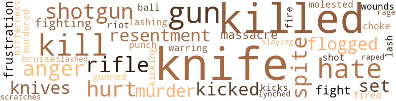
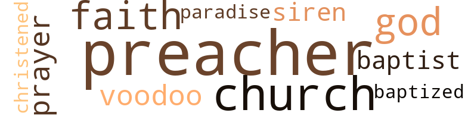

Noose and the Spear: A Tale of Passion, Adeventure and Violence (The), by Horsman, Gallan (1965)
49 music-related terms matched in this text.
Most frequent terms in this topic: dance (9); section (9); sing (4); singing (4); sang (4)
dance.n.01
Definition: an artistic form of nonverbal communication
| word | sentence |
|---|---|
| dance | They returned to the gay party atmosphere just as the orchestra started playing the first dance . |
| dance | Bill saw her and hurried across the room to claim the first dance . |
| dance | Out of sheer spite he used the interlude of the first dance to inform any attentive ear that the party was paying homage to a halfnigger . |
| dance | She stood quietly pouting by the wall during the first dance , refusing partner after partner , waiting for Joe to come and claim her . |
| dance | Joe did n't claim that first dance . |
| dance | When the dance was over , the orchestra leader , seeing the Colonel approaching leading his grandson by the hand , cued the orchestra into a short fanfare . |
| dance | Reinforced with spiked punch , he approached Patricia bravely at the end of the number to claim the next dance . |
| dance | She consented lamely , but before the dance was half over , she was complaining of a headache , and expressed a strong desire to be taken home . |
dance.v.02
Definition: move in a pattern; usually to musical accompaniment; do or perform a dance
| word | sentence |
|---|---|
| dancing | She was dancing with Joe . |
dance.v.03
Definition: skip, leap, or move up and down or sideways
| word | sentence |
|---|---|
| dance | I must dance with him first . " |
jitterbug.v.01
Definition: do the jitterbug
| word | sentence |
|---|---|
| jitterbugging | A group of teenagers were jitterbugging in the street . |
kick.v.04
Definition: kick a leg up
| word | sentence |
|---|---|
| kicking | Before he lost consciousness , Bill could see the horse running , kicking , his long tail whipping up and down . . . . |
music.n.01
Definition: an artistic form of auditory communication incorporating instrumental or vocal tones in a structured and continuous manner
| word | sentence |
|---|---|
| music | At the plantation the big mansion was brilliantly lighted - the ballroom echoing the music and gay laughter of partying neighbors and friends . |
piano.n.01
Definition: a keyboard instrument that is played by depressing keys that cause hammers to strike tuned strings and produce sounds
| word | sentence |
|---|---|
| piano | The beat of the hot piano and drums of the small combo lent a weird rhythm to the commotion . |
| piano | On another occasion , Bill attended a hand-clapping , floorstamping revival meeting where , to the vigorous beat of piano and spirited gospel singers , various members of the flock would jump to their feet and praise the Lord with wild enthusiasm . |
pipe.n.04
Definition: a tubular wind instrument
| word | sentence |
|---|---|
| pipe | I did n't mean to hit him so hard with that piece of pipe . |
rhythm.n.04
Definition: the arrangement of spoken words alternating stressed and unstressed elements
| word | sentence |
|---|---|
| rhythm | The beat of the hot piano and drums of the small combo lent a weird rhythm to the commotion . |
sax.n.02
Definition: a single-reed woodwind with a conical bore
| word | sentence |
|---|---|
| saxophone | The boisterous laughter of men , the happy shrieks of women , the melancholy swell of the saxophone which occasionally broke through the constant babble , were now dull sounds to his drunken senses . |
section.n.01
Definition: a self-contained part of a larger composition (written or musical)
| word | sentence |
|---|---|
| section | '' I was just over to the nigger section . |
| section | Daniel pointed the way down the wide boulevard in the exclusive section of town . |
| section | Daniel and other colored men were posting signs in the colored section , announcing a barbeque and street carnival to celebrate the donation of land for a new church and school for the colored people , a gift from Colonel Caldwell . |
| section | The news of the sheriff 's refusal to take action over this incident quickly spread through the colored section . |
| section | One young Negro suggested a hot-rod ride through the white section of the village . |
| section | With the badly beaten boys aboard , the sheriff towed the driverless , zig-zagging hot-rod into the Negro section . |
| section | Then he remembered that Daniel and Camilla , with the help of four Negro women from the colored section of the village , had worked most of the night cleaning up after the party . |
| section | As he felt the life go out of the body beneath him , he got to his feet and ran crazily into the colored section , madly yelling his battle-cry . |
| section | As the call swept through the colored section , the Negroes , armed with knives , guns , and clubs , quickly assembled with their own battle cry : " Stop the sheriff ! |
sing.v.02
Definition: produce tones with the voice
| word | sentence |
|---|---|
| sang | At the grave the minister made his little speech and , after a long prayer , sprinkled a little dirt onto the lowered coffin while the gospel singers sang a mournful song . |
| singing | He was singing this sentimental tune : Southern skies Whisper softly to me : " Come back where the magnolias grow ! " |
| sing | Joe started to sing : " Ole man river , you ole man river , you do n't know nothin ' . . . " John broke in , " And you ca n't sing , Yankee ! |
| sing | Joe started to sing : " Ole man river , you ole man river , you do n't know nothin ' . . . " John broke in , " And you ca n't sing , Yankee ! |
| sing | The Baptist minister had a booth too , and was busy recruiting members , with a choral group singing spiritual songs as only Negroes can sing them . |
| sang | The heavy links sang as he brought the chain across the nearest boy 's back with all his strength . |
| sang | The bubbling spring sang a bright , tinkling tune . |
| sing | He stumbled on , and the bird 's mournful cry seemed to sing : Keep walkin ' , Lead Legs , Though it is sick , plodding drudgery . |
| sang | The wind , blowing through the giant pines , making them creak and groan , sang a melancholy tune : The pillow where Your tousled hair Brushed against my cheek In molded whiteness , Now lies crisp and fresh . |
singing.n.01
Definition: the act of singing vocal music
| word | sentence |
|---|---|
| singing | " Hey , Southern-fried ! " another young man 's voice called as he finished singing . |
| singing | " Listen , cottonpicker , cut out the singing and get to work . |
| singing | The Baptist minister had a booth too , and was busy recruiting members , with a choral group singing spiritual songs as only Negroes can sing them . |
song.n.01
Definition: a short musical composition with words
| word | sentence |
|---|---|
| song | At the grave the minister made his little speech and , after a long prayer , sprinkled a little dirt onto the lowered coffin while the gospel singers sang a mournful song . |
| songs | The Baptist minister had a booth too , and was busy recruiting members , with a choral group singing spiritual songs as only Negroes can sing them . |
| song | As a joyful mockingbird burst into song , a hawk flying swiftly , tired , sailing down , and in a lazy sort of languor , circled the cove around and around and around . . . . |
| song | As the melody of the love song echoed in his ears , these words drifted through his thoughts : Like a fairy princess You skip through my thoughts , Touching my heart with a Magic wand of love - Your gay little laugh , Like a tinkling bell , Your beauty as enchanting As an exotic flower . |
tune.n.01
Definition: a succession of notes forming a distinctive sequence
| word | sentence |
|---|---|
| tune | He was singing this sentimental tune : Southern skies Whisper softly to me : " Come back where the magnolias grow ! " |
| tune | The bubbling spring sang a bright , tinkling tune . |
| tune | The wind , blowing through the giant pines , making them creak and groan , sang a melancholy tune : The pillow where Your tousled hair Brushed against my cheek In molded whiteness , Now lies crisp and fresh . |
| melody | As the melody of the love song echoed in his ears , these words drifted through his thoughts : Like a fairy princess You skip through my thoughts , Touching my heart with a Magic wand of love - Your gay little laugh , Like a tinkling bell , Your beauty as enchanting As an exotic flower . |
whistle.v.01
Definition: make whistling sounds
| word | sentence |
|---|---|
| whistled | One of them whistled at her . |
| whistle | She tried to whistle , but the only sound which would come through her pursed lips was a weak " W-u-u-u-u . " |
105 violence-related terms matched in this text.
Most frequent terms in this topic: knife (16); killed (13); kill (6); hate (5); anger (3)
abrasion.n.01
Definition: an abraded area where the skin is torn or worn off
| word | sentence |
|---|---|
| scratches | He managed to crawl out of the thicket , keenly aware of his wounds - deep , blood-clotted scratches . |
anger.n.01
Definition: a strong emotion; a feeling that is oriented toward some real or supposed grievance
| word | sentence |
|---|---|
| anger | The fierce anger of the sheriff subsided only when he had beaten all three of the boys to unconsciousness . |
| anger | His passion turned to anger in a flash ; and jerking his hand quickly from under her , he slapped her hard across the face . |
| anger | Her scream was a shrill mixture of anger , fear , and pain . |
bruise.n.01
Definition: an injury that doesn't break the skin but results in some discoloration
| word | sentence |
|---|---|
| bruises | See the bruises on her neck ? |
fight.n.05
Definition: a boxing or wrestling match
| word | sentence |
|---|---|
| fight | " Why did that gas station attendant have to put up a fight ? |
| fights | He also saw the drunken brawls , the gambling , the knife fights , and the easy virtue of many colored people . |
fight.v.02
Definition: fight against or resist strongly
| word | sentence |
|---|---|
| fighting | He looked over the Negro mob ; they seemed to be in a fighting mood . |
| fighting | I remember one time seeing two colored boys fighting over a creole girl with them knives . |
flog.v.01
Definition: beat severely with a whip or rod
| word | sentence |
|---|---|
| flogged | He had stayed up most of the night with the three colored boys the sheriff had flogged . |
| flogged | The sheriff did n't do anything about that , but we got flogged for doing forty . " |
frustration.n.03
Definition: a feeling of annoyance at being hindered or criticized
| word | sentence |
|---|---|
| frustration | Lovina lay trembling for a while , her body throbbing with frustration . |
| frustration | As she lay rubbing the frustration out of her trembling body , she thought of Lurene . |
fury.n.01
Definition: a feeling of intense anger
| word | sentence |
|---|---|
| rage | A young suitor had confessed to the slaying of his daughter Barbara in a jealous rage . |
gag.v.06
Definition: cause to retch or choke
| word | sentence |
|---|---|
| choke | I did n't mean to choke her . |
gun.n.01
Definition: a weapon that discharges a missile at high velocity (especially from a metal tube or barrel)
| word | sentence |
|---|---|
| gun | The men followed him into another room , where he unlocked a heavily bolted closet and handed each of the six men a heavy squad gun , capable of cutting a man down with a single shot . |
| guns | The sheriff stood before his six armed deputies , their squad guns pointed at the partying Negroes . |
| guns | The men were carrying clubs or guns , and he could see the sheriff shouting and pointing across the meadow . |
| guns | As the call swept through the colored section , the Negroes , armed with knives , guns , and clubs , quickly assembled with their own battle cry : " Stop the sheriff ! |
| gun | Lovina ignored the gun and touched a huge poker . |
| gun | " I could n't even fire a gun . |
gun.v.01
Definition: shoot with a gun
| word | sentence |
|---|---|
| gunned | Suddenly he gunned the motor and sped off toward the village . |
hate.n.01
Definition: the emotion of intense dislike; a feeling of dislike so strong that it demands action
| word | sentence |
|---|---|
| hate | I 'd kinda hate to give up my job to the Army . |
hate.v.01
Definition: dislike intensely; feel antipathy or aversion towards
| word | sentence |
|---|---|
| hate | I , personally , would hate to go to school with them . " |
| hate | " Would you hate me ? " |
| hate | " Of course I would n't hate you . |
| hate | " I hate to do it . " |
hurt.v.04
Definition: cause damage or affect negatively
| word | sentence |
|---|---|
| hurt | He might be hurt . " |
kick.v.04
Definition: kick a leg up
| word | sentence |
|---|---|
| kicking | Before he lost consciousness , Bill could see the horse running , kicking , his long tail whipping up and down . . . . |
kick_back.v.02
Definition: spring back, as from a forceful thrust
| word | sentence |
|---|---|
| kicked | He kicked the sign down . |
| kicked | The horse regained his balance and kicked . |
| kicks | The beast reared mightily , then went into a frenzied orgy of rears , bucks , and kicks . |
kill.v.10
Definition: cause the death of, without intention
| word | sentence |
|---|---|
| kill | " Imagine an old man like Jeremiah trying to kill a wild pig with a twenty-two rifle I The pecan crop is not so good this year , but we have had a lot of wild berries . |
| killed | " Sam Wood , " Daniel supposed , " it was you I saw running so long ago I It was you who came back and killed Master Bill ! " |
| killed | " The mob killed everyone but you , and it was your fault . " |
| killed | He killed my Lovina ! " |
| killed | He killed her ! |
| killed | Bill killed his daughter ! " |
| killed | " It was you who killed her ! " cried the enraged ' Negro . |
| killed | You killed her . " |
| killed | " And I 'm telling you , Sheriff , " continued Daniel , " it was n't Master Bill ; it was that surveyor , Joe Gasper , who killed Miss Patricia . " |
| kill | " All you have to do , " he continued , " is take this here spear and kill a nigger . " |
| kill | He knew that if he brought one Negro down that these white men would kill every Negro in sight . |
| killed | Bill never believed the Negro boy had killed his sister ; he was certain it had been a jealous suitor . |
| killed | Young Claybourn confessed ; he killed Barbara . " |
| killed | Raped a white girl and killed her , they said . |
| kill | " They will kill you . " |
| killed | The old Colonel lost all interest in the plantation after Bill was killed . |
| kill | He had no business trying to kill a razorback with a twenty-two . " |
| killed | " My sister-in-law did n't tell me Jeremiah got killed . |
killing.n.02
Definition: the act of terminating a life
| word | sentence |
|---|---|
| kill | There was no question that they meant business ; they were poised for the kill . |
knife.n.02
Definition: a weapon with a handle and blade with a sharp point
| word | sentence |
|---|---|
| knife | He ran over to the thicket with his knife to gut him and bring him home on the wagon . |
| knife | He stood nervously fingering the pearl handle of the knife tucked in his belt . |
| knife | The sheriff gripped the knife and took a menacing step forward . |
| knife | '' If the niggers stay where they belong there wo n't be no trouble ; but I am telling you , let one of 'em knife or rape a white , and a nigger is gon na hang ! " |
| knife | The words cut Bill Harris like a knife . |
| knife | His hand firmly gripped the pearl-handled knife under his belt . |
| knives | As the call swept through the colored section , the Negroes , armed with knives , guns , and clubs , quickly assembled with their own battle cry : " Stop the sheriff ! |
| knife | Bill grabbed the knife from the surprised sheriff 's belt and stabbed himself in the heart . |
| knife | As Daniel ran forward , a deputy looked past the humbled figure of the sheriff to the pearl handle of the knife sticking out of Bill 's chest . |
| knife | He remembered the sudden impulse which had prompted him to reach for his hunting knife in the saddlebag . |
| knife | The knife appeared from nowhere and cut a vivid , thin red path along the jawbone from ear to chin . |
| knife | As he stood before the plantation owner , he nervously fingered the handle of a hunting knife tucked in his belt . |
| knife | The pearl-handled hunting knife had served as his badge of authority ever since he had used it in the war to clean out an enemy machine-gun nest . |
| knife | The people of the valley knew about the exploit , and they respected the knife . |
| knife | As he withdrew the knife , he turned , crouching like a football tackle , brandishing his knife and looking for another victim . |
| knife | As he withdrew the knife , he turned , crouching like a football tackle , brandishing his knife and looking for another victim . |
| knife | I used to cut it with a bolo knife . |
| knives | I remember one time seeing two colored boys fighting over a creole girl with them knives . |
lynch.v.01
Definition: kill without legal sanction
| word | sentence |
|---|---|
| lynched | " What they gon na do about my boy ? " asked the lynched boy 's father . |
malice.n.01
Definition: feeling a need to see others suffer
| word | sentence |
|---|---|
| spite | Yes , he would open the big mansion in spite of the fact big houses were a thing of the past . |
| spite | Out of sheer spite he used the interlude of the first dance to inform any attentive ear that the party was paying homage to a halfnigger . |
| spite | In spite of her tears , Lovina smiled . |
molest.v.01
Definition: harass or assault sexually; make indecent advances to
| word | sentence |
|---|---|
| molested | The only discordant note at this happy time for the valley was the complaint of the Negro tractor operator to the sheriff that his daughter had been molested by young white men . |
murder.n.01
Definition: unlawful premeditated killing of a human being by a human being
| word | sentence |
|---|---|
| murder | He learned of his daughter 's murder from one of the village women . |
| murder | The Negress screamed bloody murder . |
| slaying | A young suitor had confessed to the slaying of his daughter Barbara in a jealous rage . |
murder.v.01
Definition: kill intentionally and with premeditation
| word | sentence |
|---|---|
| murdered | Bill Harris murdered Patricia last night , " the woman said . |
musket_ball.n.01
Definition: a solid projectile that is shot by a musket
| word | sentence |
|---|---|
| ball | She had met him only casually , and she was sure that Joe Gasper would blow his top ; still , she could n't resist the opportunity to be the belle of the ball . |
open_fire.v.01
Definition: start firing a weapon
| word | sentence |
|---|---|
| fired | A white mobster raised his rifle quickly and fired . |
| fire | " I could n't even fire a gun . |
pain.v.02
Definition: cause emotional anguish or make miserable
| word | sentence |
|---|---|
| hurt | It wo n't hurt to rub a little salt in Joe 's sore pride she thought . |
| hurt | She was dead , and losing the girl had hurt the old man very deeply . |
punch.n.01
Definition: (boxing) a blow with the fist
| word | sentence |
|---|---|
| punch | Reinforced with spiked punch , he approached Patricia bravely at the end of the number to claim the next dance . |
rape.v.01
Definition: force (someone) to have sex against their will
| word | sentence |
|---|---|
| Raped | Raped a white girl and killed her , they said . |
resentment.n.01
Definition: a feeling of deep and bitter anger and ill-will
| word | sentence |
|---|---|
| bitterness | The smile was magic ; it wiped eighteen years of bitterness from the old man 's face . |
| resentment | There was strong resentment . |
| resentment | But folks did n't take that second look as the plantation cook and handywoman had suggested , and Bill hid his resentment by running off by himself into the world of nature . |
rifle.n.01
Definition: a shoulder firearm with a long barrel and a rifled bore
| word | sentence |
|---|---|
| rifle | " Imagine an old man like Jeremiah trying to kill a wild pig with a twenty-two rifle I The pecan crop is not so good this year , but we have had a lot of wild berries . |
| rifle | A white mobster raised his rifle quickly and fired . |
| rifle | He took down a rifle from over the fireplace and offered it to her . |
riot.n.01
Definition: a public act of violence by an unruly mob
| word | sentence |
|---|---|
| riot | Sam Wood was jailed overnight for trying to incite a riot , and the feeling died down . |
shoot.v.02
Definition: kill by firing a missile
| word | sentence |
|---|---|
| shot | He shot him with the twenty-two , and to his surprise the hog went down . |
shotgun.n.01
Definition: firearm that is a double-barreled smoothbore shoulder weapon for firing shot at short ranges
| word | sentence |
|---|---|
| shotgun | " See ? " cried Sam , now armed with a double-barreled shotgun . |
| shotgun | Sam Wood stepped forward , aiming the shotgun at the sheriff . |
| shotgun | Sam dropped the shotgun , clutched his forehead as he spun and fell to the ground . |
sic.v.01
Definition: urge to attack someone
| word | sentence |
|---|---|
| set | Do n't let the sun set on you here . " |
| set | Do n't let the sun set on you here . " |
slaughter.n.03
Definition: the savage and excessive killing of many people
| word | sentence |
|---|---|
| massacre | The massacre was over . |
| massacre | From the expressions on the two men 's faces as they surveyed the massacre , one could almost read their thoughts : Lucky you , Negro Sentry , One shot and you were gone ; Lie in peace , with your eyes closed , In a huddled mass . |
war.v.01
Definition: make or wage war
| word | sentence |
|---|---|
| warring | The first thing they saw when they were let into the shack was the big zebra-skin shield and the two aged spears stuck into the floor and crossed to form a support for the shield , relics that his great-great-grandfather , as a tribal chief , somehow had been permitted to bring with him to America when he was sold into slavery by a warring neighbor chief . |
whip.v.04
Definition: strike as if by whipping
| word | sentence |
|---|---|
| lashing | The boy 's scream of agonized terror was n't spent before the angry sheriff again brought the chain lashing across his back . |
| lash | The boy passed out as the third lash struck him , and he slumped on the pole . |
| lashed | The Negro began urging the old horse onto the barge lashed to a rickety landing . |
wound.n.01
Definition: an injury to living tissue (especially an injury involving a cut or break in the skin)
| word | sentence |
|---|---|
| wounds | He managed to crawl out of the thicket , keenly aware of his wounds - deep , blood-clotted scratches . |
18 religion-related terms matched in this text.
Most frequent terms in this topic: preacher (4); church (3); God (2); faith (2); voodoo (1)
baptist.n.01
Definition: follower of Baptistic doctrines
| word | sentence |
|---|---|
| Baptist | The Baptist minister had a booth too , and was busy recruiting members , with a choral group singing spiritual songs as only Negroes can sing them . |
baptize.v.01
Definition: administer baptism to
| word | sentence |
|---|---|
| christened | Daniel and Camilla Jones christened the baby boy William Harris . |
| baptized | He was baptized in the river near the big city by a gray-haired Baptist minister . |
church.n.02
Definition: a place for public (especially Christian) worship
| word | sentence |
|---|---|
| church | He has seen colored girls at church and socials - pretty ones too , but he never paid any attention to them . |
| church | Daniel and other colored men were posting signs in the colored section , announcing a barbeque and street carnival to celebrate the donation of land for a new church and school for the colored people , a gift from Colonel Caldwell . |
| church | Co-workers were busy signing new members and financial pledges to support the new proposed church . |
eden.n.01
Definition: any place of complete bliss and delight and peace
| word | sentence |
|---|---|
| paradise | It is paradise . " |
god.n.03
Definition: a man of such superior qualities that he seems like a deity to other people
| word | sentence |
|---|---|
| God | " No , " answered the sheriff , " but by God , they ought to be - insulting a white girl ! " |
| God | " By God , it wo n't be without food . " |
prayer.n.01
Definition: the act of communicating with a deity (especially as a petition or in adoration or contrition or thanksgiving)
| word | sentence |
|---|---|
| prayer | At the grave the minister made his little speech and , after a long prayer , sprinkled a little dirt onto the lowered coffin while the gospel singers sang a mournful song . |
preacher.n.01
Definition: someone whose occupation is preaching the gospel
| word | sentence |
|---|---|
| preacher | The preacher is comin ' with the gospel singers . " |
| preacher | The preacher will be over there pretty soon now . |
| preacher | Some of the Negroes refused to take part in the celebration ; but through the patient urging of Daniel Jones and the preacher from the big city , the population calmed down and the colored folks were again back at work making preparations for the big celebration . |
| preacher | He watched the preacher stand in the water up to his waist as he made his little baptism speech , pinched the nose with his thumb and forefinger , clapped his palm securely over the mouth , and then , with his free hand firmly at the small of the back , forced a Negro woman down until she was completely submerged . |
religion.n.01
Definition: a strong belief in a supernatural power or powers that control human destiny
| word | sentence |
|---|---|
| faith | Bill Harris had heard of voodoo , but he thought for the most part it had been replaced by snake-handlers and faith healers . |
| faith | As she received the spirit of the Lord , she came up flaying the air with her arms , gasping for breath , and screaming her new-found faith with frenzied passion . |
siren.n.01
Definition: a sea nymph (part woman and part bird) supposed to lure sailors to destruction on the rocks where the nymphs lived
| word | sentence |
|---|---|
| siren | With the siren swelling to full pitch , the station wagon sped after the hot-rod . |
voodoo.n.03
Definition: a religious cult practiced chiefly in Caribbean countries (especially Haiti); involves witchcraft and animistic deities
| word | sentence |
|---|---|
| voodoo | " Do they sure enough still practice voodoo around here ? " asked Daniel . |